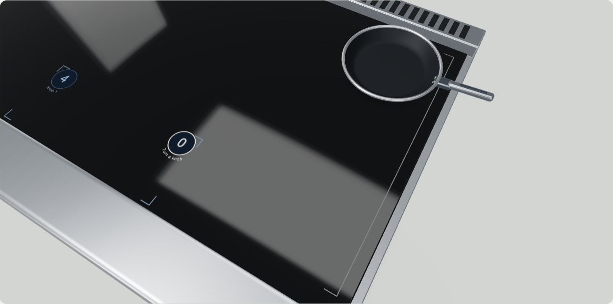

Project
Appliance Interactions in VR
Overview
On a traditional cooktop, each knob controls a fixed burner. You know which knob belongs to which cooking zone. But when pots can move freely across an induction surface, how do you know which knob controls which pot?
At Bosch and Thermador, I have been exploring how to rebuild that connection. I compared different ways of assigning cookware to knobs in desktop prototypes, then brought the preferred interaction into VR on a Meta Quest 3. This let me place cookware, turn the controls, and follow the feedback while standing in front of a full-scale appliance model.
Let the cook choose
I explored assigning cookware to the nearest available knob and letting the cook choose one. In the flow I developed further, white rings show which knobs are available. The first turn assigns the pot and turns the ring blue. Further turns adjust the power.

See what each knob controls
A small map on the cooking surface shows the cookware and its power levels. Touching a knob highlights its marker; touching a marker brightens the connected knob. This gives the cook a way to check the connection from either end.
Move the pot, keep the connection
Sliding a pot moves its marker on the map while keeping the same knob assignment and power setting. Lifting it pauses the simulated cooking and changes the marker to Paused. Putting it back down restores its previous setting.